Fluxograma
Como funciona?
Na programação, o fluxograma é um desenho que mostra como um programa funciona passo a passo. Ele usa símbolos para representar ações, decisões, entradas e saídas, e setas para indicar o caminho que o programa deve seguir. Serve para planejar e entender a lógica antes de escrever o código, ajudando a evitar erros e facilitar a programação
Simbologia | Funcionamento
| Símbolo | Nome | Função |
|---|---|---|
|
Fim
|
Terminador | Início ou fim do processo |
|
Processo
|
Processo | Etapa de execução ou ação |
|
Decisão
|
Decisão | Ponto de verificação / pergunta sim/não |
| Fluxo | Direção do fluxo do processo | |
|
Entrada
|
Entrada / Saída | Dados que entram ou saem do processo |
Exemplos
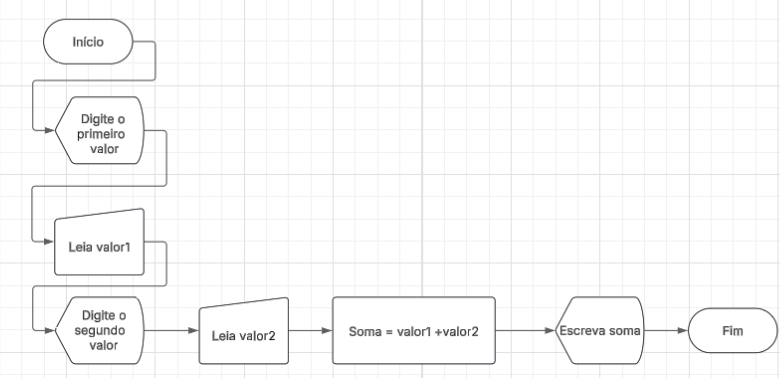
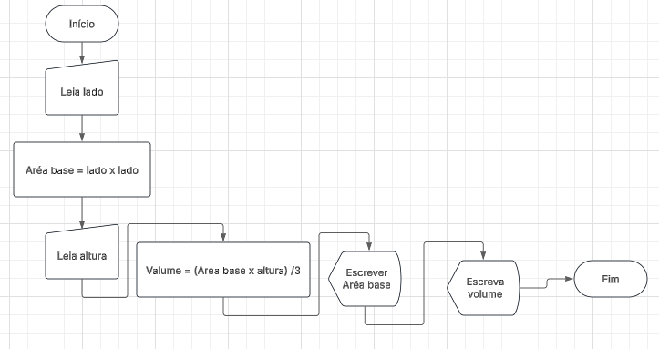
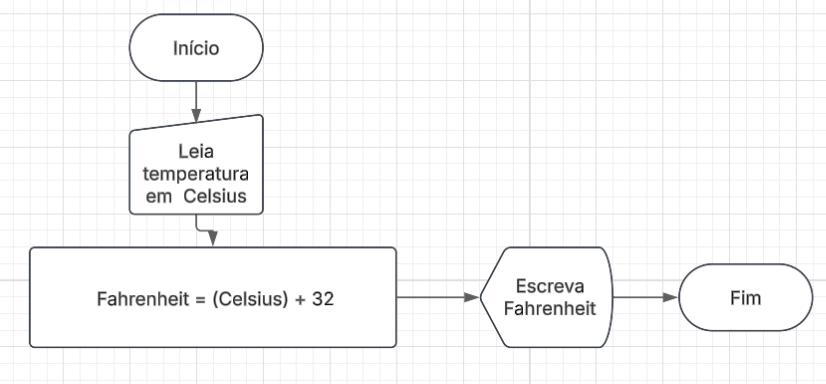
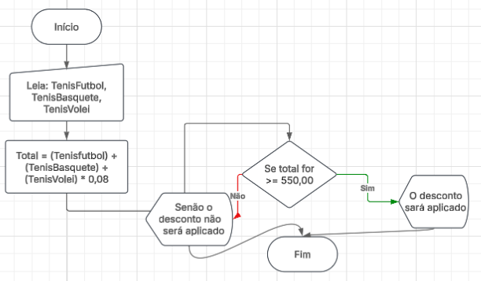
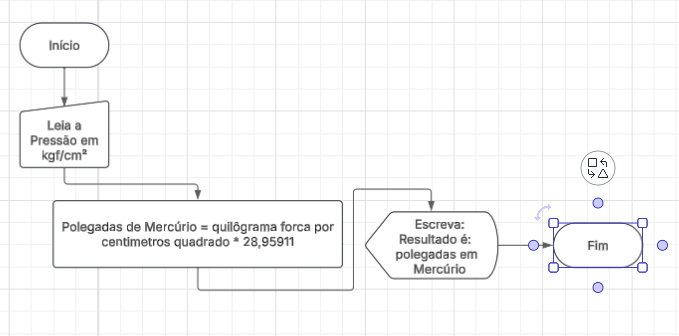
Algoritimo
Entendendo o funcionamento
Na programação, o algoritmo é uma sequência de passos organizados que indicam como resolver um problema ou executar uma tarefa. Ele descreve o raciocínio lógico que o computador deve seguir para chegar a um resultado. Antes de escrever o código, o programador cria o algoritmo para planejar as ações do programa, garantindo clareza e eficiência. Assim, os algoritmos ajudam a transformar ideias em soluções que o computador pode entender e executar corretamente.
Exemplo prático:
Os algoritmos estão presentes em praticamente todas as áreas da tecnologia e também no nosso dia a dia. Um exemplo disso é uma receita de bolo, você segue um conjunto de passos, em ordem, para alcançar um resultado final.
| Exemplificação | Funcionalidade | Utilização |
|---|---|---|
| Receita de bolo ou cálculo de média escolar. | Organizar passos lógicos para resolver problemas. | Base para fluxogramas e códigos de programação. |
Portugol
💡 Oque é o Portugol? 💡
O Portugol é uma linguagem de pseudocódigo utilizada para representar algoritmos de forma simples e próxima da língua portuguesa. Ele serve como uma ponte entre o raciocínio lógico e a programação real, ajudando o estudante a compreender como organizar instruções e estruturar soluções antes de usar uma linguagem formal. Por meio do Portugol, é possível planejar cada passo do programa de maneira clara e objetiva, facilitando o entendimento do funcionamento de decisões, repetições e variáveis. Assim, o Portugol contribui para transformar a lógica do pensamento humano em um modelo que o computador pode interpretar quando o código for finalmente desenvolvido em uma linguagem de programação.
Variáveis e Constantes
O que caracteriza uma variável e uma constante?
As variáveis e constantes são elementos fundamentais da programação que permitem armazenar informações utilizadas pelo programa durante sua execução. As variáveis guardam valores que podem mudar ao longo do código, acompanhando as necessidades e cálculos do algoritmo. Já as constantes mantêm um valor fixo, garantindo que uma informação importante permaneça a mesma do início ao fim. Antes de desenvolver um programa, o programador define quais dados precisam ser alterados e quais devem permanecer estáveis, organizando essas informações de forma clara e eficiente. Assim, variáveis e constantes tornam possível controlar e manipular dados, permitindo que o computador execute as tarefas de maneira precisa e estruturada.
Exemplos:
| Exemplificação | Funcionalidade |
|---|---|
| Idade | 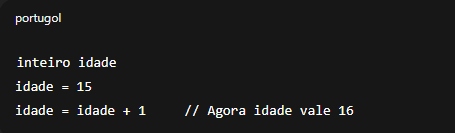 |
Exemplos 2:
| Exemplificação | Funcionalidade |
|---|---|
| Notas escolares | 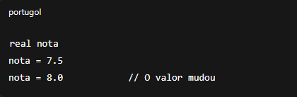 |
Exemplos 3:
| Exemplificação | Funcionalidade |
|---|---|
| Nomes | 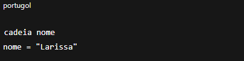 |
Quais os tipos de dados mais usados no Portugol?
Os tipos de dados no Portugol são fundamentais para organizar as informações que o programa irá utilizar durante sua execução. Cada tipo define qual formato de dado pode ser armazenado, garantindo que os valores sejam tratados de maneira correta e segura. Entre os mais usados está o inteiro, responsável por números sem casas decimais, e o real, que permite trabalhar com valores numéricos fracionados. Também existe o caractere, utilizado para representar um único símbolo, e a cadeia, que armazena textos mais longos, como palavras ou frases. Além deles, o tipo lógico é usado quando precisamos de decisões baseadas em verdadeiro ou falso. Ao escolher o tipo de dado adequado, o programador assegura que o algoritmo funcione com precisão, evitando erros e tornando o código mais organizado e eficiente.
Tipo 1: Inteiro
O tipo de dado inteiro é usado em algoritmos para representar números sem casas decimais, como 0, 15 ou –3. Ele serve para guardar valores exatos, como idade, quantidade de itens ou qualquer número que não seja fracionado. No Portugol, usar o tipo inteiro ajuda o programa a entender que aquele valor será sempre um número completo, facilitando cálculos e evitando erros.
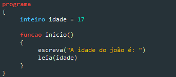
Tipo 2: Real
O tipo de dado real é usado em algoritmos para representar números com casas decimais, como 3.5, 0.8 ou 12.75. Ele é importante quando o programa precisa trabalhar com valores fracionados, como notas, pesos, medidas ou cálculos mais precisos. No Portugol, o tipo real garante que o computador armazene números completos e decimais corretamente, permitindo operações matemáticas mais detalhadas.
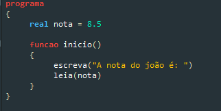
Tipo 3: Caracter
O tipo de dado caractere é utilizado em algoritmos para representar apenas um único símbolo, como uma letra, número ou sinal. Ele sempre é escrito entre aspas simples, por exemplo: 'A', '7' ou '?'. Esse tipo é importante quando precisamos armazenar apenas um caractere específico, como a inicial de um nome, uma opção de menu ou uma resposta simples do usuário. No Portugol, usar o tipo caractere ajuda o programa a entender que aquela informação é apenas um símbolo isolado, e não um texto completo.
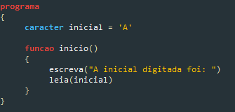
Tipo 4: Cadeia
O tipo de dado cadeia é usado em algoritmos para representar textos, ou seja, conjuntos de vários caracteres. Diferente do tipo caractere, que armazena apenas um símbolo, a cadeia permite guardar palavras, frases e nomes completos, sempre escritos entre aspas duplas, como "Maria" ou "Bem-vindo ao programa". Esse tipo é essencial quando o algoritmo precisa trabalhar com informações textuais, como mensagens, nomes de pessoas ou respostas mais longas. No Portugol, utilizar o tipo cadeia ajuda o programa a organizar e manipular textos de forma clara e eficiente.
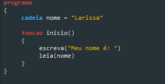
Exemplos de Funções:
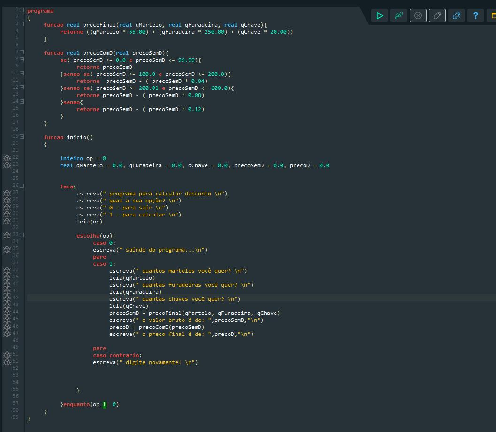
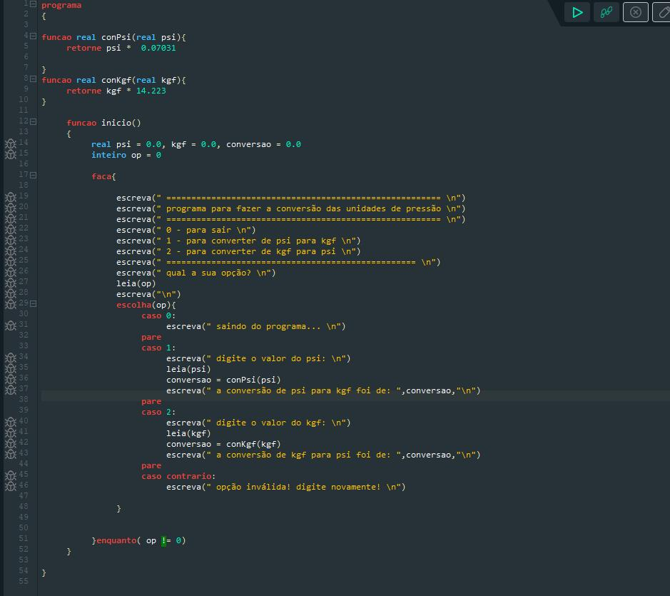
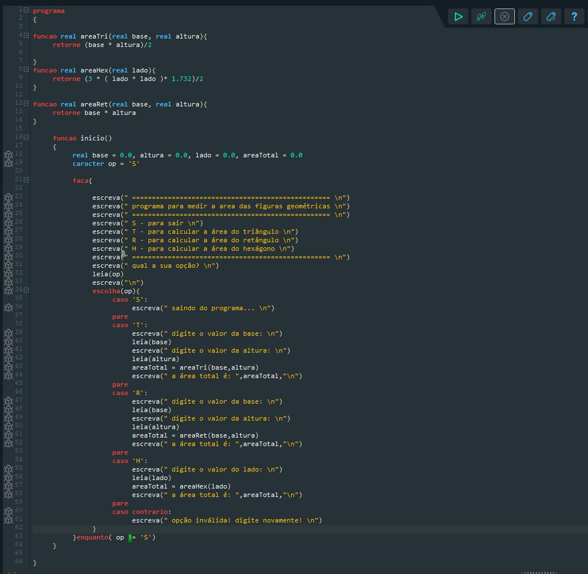
Exemplos de Vetores:
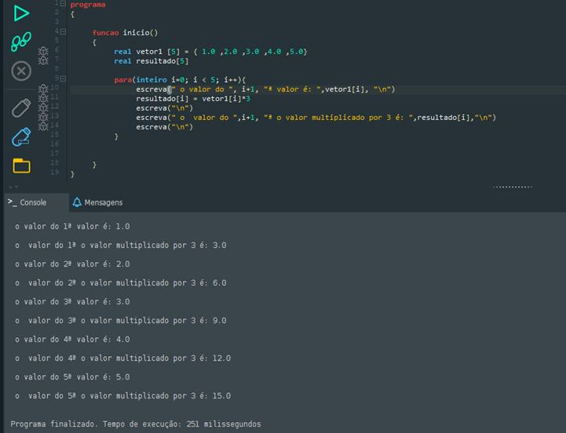
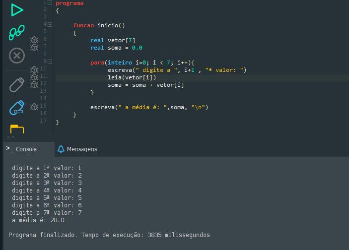